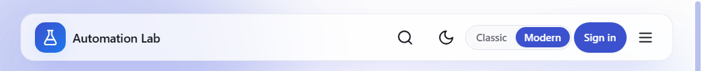

Automation Testing Practice Platform
Updated flow documentation for the latest Classic and Modern UI redesign.
39 Practice Modules 12 Async Challenges 4 Workflows 18 Learning Tracks 150 Lessons
Security note: this guide intentionally excludes demo credentials.
1) Interface Overview
The app has two switchable shells with the same routes and data: Classic and Modern. You can switch mode from the header toggle.
Classic shell (console rail + flyout)

Modern shell (spotlight header + command dock)

2) Global Navigation Flow
flowchart TD
Home([Home Dashboard]) --> Explore[/Explore/]
Home --> Learn[/Learning/]
Home --> Practice[/Modules/]
Home --> Challenges[/Challenges/]
Home --> Workflows[/Workflows/]
Explore --> Learn
Explore --> Practice
Learn --> Track[Track page]
Track --> Lesson[Lesson page]
Practice --> Category[Category page]
Category --> Module[Module page]
Home -.admin only.-> Admin[/Admin/]
3) Home and Explore Screens


4) Authentication Flow
sequenceDiagram
actor User
participant SPA as React SPA
participant API as Express API
participant DB as MongoDB
User->>SPA: Submit login form
SPA->>API: POST /api/auth/login
API->>DB: Validate user + password hash
DB-->>API: User record
API-->>SPA: access token + refresh cookie
SPA->>API: GET /api/auth/me
API-->>SPA: Profile
SPA-->>User: Continue to requested route

5) Learning Flow
Learning is split by tool family (Selenium, Playwright), then by level and track. Visitors can browse tracks, and authenticated users can open full lesson content.
flowchart TD
L0([Open /learning]) --> L1[Tool family sections]
L1 --> L2[Choose a track]
L2 --> L3[Track page with lesson list]
L3 --> L4{Open lesson}
L4 -->|Authenticated| L5[Read lesson content]
L4 -->|Guest| L6[Redirect to /login]
L6 --> L5


6) Practice, Challenge, and Workflow Flows
Practice modules use category pages and module detail pages. Challenges and workflows follow the same module pattern on separate route namespaces.
flowchart TD
P0([Open /modules]) --> P1[Select category]
P1 --> P2[Open module]
P2 --> P3[Interact with controls]
C0([Open /challenges]) --> C1[Select challenge]
C1 --> C2[Execute async/timing scenario]
W0([Open /workflows]) --> W1[Select workflow]
W1 --> W2[Complete end-to-end flow]


7) Architecture Diagram
flowchart LR
subgraph Browser
SPA[React + TypeScript SPA]
end
subgraph API
C[Controllers]
S[Services]
R[Repositories]
WS[Socket gateway]
end
DB[(MongoDB)]
SPA -->|REST /api| C
SPA -->|WebSocket| WS
C --> S --> R --> DB
WS --> S
8) Deployment Topology
flowchart LR
Dev[Developer] --> GH[(GitHub)]
GH --> FE[Static frontend host]
GH --> BE[Render API service]
FE -->|HTTPS /api| BE
BE -->|mongodb+srv| MDB[(MongoDB Atlas)]
Ping[Uptime monitor] --> BE
9) Current Catalog Snapshot
| Area | Count | Notes |
|---|---|---|
| Learning tracks | 18 | Selenium + Playwright track families |
| Learning lessons | 150 | Total across all tracks |
| Practice modules | 39 | All routes under /modules/* |
| Async challenges | 12 | All routes under /challenges/* |
| Business workflows | 4 | All routes under /workflows/* |
Practice category distribution
| Category | Count |
|---|---|
| Form Controls | 12 |
| Interactions | 6 |
| Components | 9 |
| Data & Network | 9 |
| Advanced DOM | 4 |
| Async Challenges | 11 |
| Business Workflows | 4 |